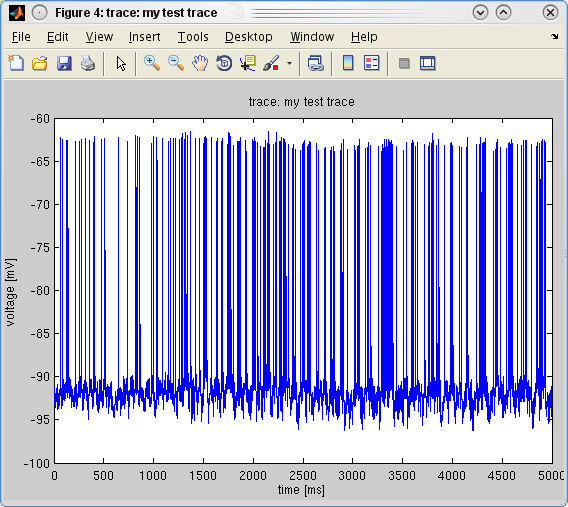

First download the example Matlab data file from here and load it like this:
load('supp_mat_1_dat.mat')
This will load the intracellular data in a simple Matlab array called test_data.
trace object from example or your own dataFirst you need to specify the X and Y-axis resolutions of your data:
dt = 1e-4; % recorded @ 10 khz
dy = 1e-3; % in mV
Then Pandora's spike finder can be run in different ways based on if the Signal Processing Toolbox is available:
props = struct;
if exist('filtfilt', 'file') ~= 2
% If no signal processing toolbox, use spike_finder method #2
props = struct('spike_finder', 2, 'threshold', -85);
end
Then, create the trace object:
a_trace = trace(test_data, dt, dy, 'my test trace', props)
This will tell you the details of the object you created:
trace, id=my test trace
ans =
data: [50000x1 double]
dt: 1.0000e-04
dy: 1.0000e-03
id: 'my test trace'
props: [1x1 struct]
Almost all Pandora objects allow plotting using overloaded methods:
plot(a_trace)
will produce the following plot:

You can type help trace or doc trace to get more help on trace options. If this gives you the help for the Matlab trace function for summing diagonal elements, try pandora/trace in the help and doc commands.
Now you can continue onto the next tutorial on Finding Spike Times.
The trace object in Pandora can directly load data files if the filename is specified as the first argument. It autodetects the file type from its extension, but the user can also force them with the file_type property:
file_type: Specify file type instead of guessing from extension:
'genesis': Raw binary files created with Genesis disk_out method.
'genesis_flac': Compressed Genesis binary files.
'neuron': Binary files created with Neuron's Vector.vwrite method.
'neuronascii': Ascii files created from Neuron's Vector objects.
Uses time step in file to scale given dt (Must be in ms).
'pcdx': .ALL data acquisition files from PCDX program.
'matlab': Matlab .MAT binary files with matrix data.
'neuroshare': One of the vendor formats recognized by
NeuroShare Windows DLLs. See above and http://neuroshare.org. A
scale_y value may need to be supplied to get the correct units.
'abf': AxoClamp .ABF format read with abf2load from Matlab FileExchange.
NeuroShare formats are supported only under the Windows operating system where the vendor supplied libraries exist.
For instance a Genesis simulator file can be loaded with:
>> a_trace = trace('data_1_trial_0_pAcip.bin', 1e-4, 1e-3, 'GP sim1')
If you look at the help for trace, you will see a long list of options. These are the most useful ones:
scale_y: Y-axis scale to be applied to loaded data.
offset_y: Y-axis offset to be added to loaded and scaled data.
unit_y: Unit of Y-axis as in 'V' or 'A' (default='V').
y_label: String to put on Y-axis of plots.
trace_time_start: Samples in the beginning to discard [dt]
channel: Channel to read from file Genesis, PCDX, NeuroShare or
Neuron file, or column in a data vector.
numTraces: Divide the single column vector of data into this
many columns by making it a matrix.
For instance, the following command will load a Genesis file, but will skip the first 1000 data points and scale the data by 1e3.
>> a_trace = trace('data_1_trial_0_pAcip.bin', 1e-4, 1e-3, 'GP sim1',
struct('trace_time_start', 1000, 'scale_y', 1e3))
If you chose anything other than dt=1e-4 above, you would get the following error when looking for spikes:
>> a_spikes = spikes(a_trace)
??? Error using ==> trace.findFilteredSpikes at 95
Trace is not sampled at 10KHz, cannot use findFilteredSpikes! Choose another
spike_finder method or supply a CustomFilter (see trace)
The better solution is to supply the custom filter while creating the trace object:
a_trace = trace(test_data, dt, dy, 'my test trace', struct('custom_filter', 1))
which will automatically create a 2-pole Butterworth filter that has a bandpass between 50 - 3000 Hz. You can change these limits with the lowPassFreq and highPassFreq properties in trace. Just append them to the struct above.
Next tutorial: Finding Spike Times.